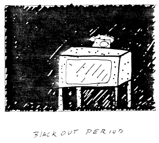

Brief commentary, new slants, current scholarly finds are invited for our Alerts section. Poets and scholars are equally welcome to comment.
Kate's Talk
 A Talk presented by Mei-mei Berssenbrugge at The Poetry Project, St. Mark's on the Bowery, October, 1987
A Talk presented by Mei-mei Berssenbrugge at The Poetry Project, St. Mark's on the Bowery, October, 1987
1.
This talk is trying to be an example of the moment when knowledge in the body starts to cross over into knowledge that you can say.
I will try to elucidate the feeling of tunings of the richness of the events in your experience, as degrees of meaning of your experiences.
I am going to try and do this by creating a patchwork or collages out of words to imitate the experiential patchwork, the patchwork of our senses, and the meaning we attach to those patches, which I will call a feeling of meaning, or in daily life I want to call it a feeling of richness.
It interests me, to make this patchwork two dimensional and opaque, although it probably isn't. Because I want to use the opaqueness as a richness of saturation or density in our experience of a moment or of an event. Whereas the time in which we experience is really more like a layered sound.
Is it how close you are to being a creature that enables you to experience with sensuality,
or is it the refinement of a moral sense, so that the person's feeling and sense of meaning are congruent with each other?
And this is really talking about the way a poem means something.
2.
Patches of each of these things that you pay attention to, assemble
in October light with a richness that comes from the light emitting from each little red box of a deteriorating plant cell.
Here is a literal example of forgetting by thinking: I can think an opaque patch of a scene onto this scene.
For example, your mother asks you to comb her hair, in the middle of some traffic.
You see a woman walking in the distance. First you remember her red sweater. Then you remember her face, the fine tunings of an intelligence, which becomes something like a sample.
The space of the desert emits yellow light thrown upon it.
If the world is flames, and you are flames too, then you don't see the flames.
A person comes to you, while you are thinking. She is there with you in your thought, and she is also struggling to leave her body,
like a patch of the sound of bus wheels next to a branch that is moving back and forth outside your window.
You can't help seeing sections of wall behind it, as if your memory or your sense of meaning about the person were an embodiment of the person,
so that the end result is that you see through the branch the expanse of wall behind the branch,
when the spray of yellow leaves moves.
3.
So that a person leaves his body and appears in your dream. And he is in his body, sleeping. He doesn't remember you. But you remember him in your dream at dawn by the sea.
And you can patch him next to the woman's long black hair. If you never see the woman again, you can believe
you are not seeing him, although he is in front of you, and he is anxious.
Here is an edge of what you ingest in the process of your combustion. If it feels like a desire, then everything is flames and you are not flames.
Your eyes are a vanishing point outside the patches.
At first she remembered a volume of light you look out across, charged with the feeling for the person you are looking with,
so that you wave back and forth in front of the person, as if other people
could see through you to the person,
because there is a patch of feeling, and patches of the causes of the feeling adjacent to each other, which seem to reveal each other translucently.
So that a woman leaves her body irradiated in an upstairs bedroom in the west and appears to you in a red sweater,
and a woman appears to you with long black hair, who has no body,
and a man leaves his body sleeping in a historic Bostonian house, and appearing to you,
reacts with embarrassment.
Everything could be flames emitted by decay or combustion if you are thinking about it, except that you are flames, too,
with the physiological coordinates of a body:
such as,
A child in a blue dress, repeating the name of his dog. The dog is old, and traumatized by the arrival of the child into the family.
If the child does not know the dog is old, then the child's ignorance of that decay is an invisible place, through which you see the shadow of the branch uninterrupted on the wall?
A space above where 125 tulip bulbs failed to grow.
4.
A greater perception is what you can know more of, becoming more open to a richer level of experience,
which is why one's capacity for awareness is inseparable from being with other people
as if the interaction with a person, whether it be in the present or in memory, were a growing point, and directional, the direction towards a perception, twinkling lights below the trees in town, from your vantage point above.
During life, the body can carry the weight of the soul, but when the body goes, the soul becomes very heavy.
I believe this is how your feeling can carry a sense meaning.
So that a feeling can carry the weight of a meaning, which is otherwise too heavy or too light.
A sense of meaning fills in the feeling with opacity and makes a patch,
even though the patch is just an appearance or a seeming.
I would like to associate this feeling with the present tense, or the tense of meaning.
Wittgenstein: Even if I dream that I see light, properly speaking, this in me is called feeling and used in this precise sense that is no other thing than thinking.
And if you ask,
in regard to feeling, What has this got to do with a feeling of death, that seems to be such a distinct substance?
or in regard to appearances, What is it about another person that you think you have, that you think you can lose?
this may have to do with clinging to an idea about time,
which prevents your feeling of meaning from starting to assemble into glowing patches.
It is the same kind of patch such as in words would be an inchworm of yarrow flowers.

 --in memory of Kate Peck Kent.
--in memory of Kate Peck Kent.

Mei-mei Berssenbrugge's books include
Summits Move With The Tide,
The Greenfield Review Press;
Random Possession,
I. Reed Books;
The Heat Bird,
Burning Deck; and
Hiddenness,
in collaboration with Richard Tuttle, Whitney Museum of Art Library Fellows. Her new collection,
Empathy,
is just out from Station Hill. She lives in El Rito, New Mexico, and New York City.

go to this issue's table of contents